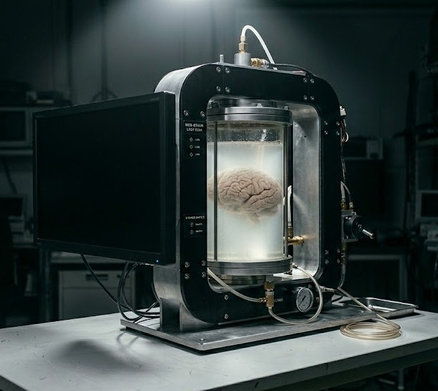

未起動状態の試作1号機。写真ではセットしていないが、性能を落とさずサーバーラックへ偽装するためのカバーを制作済み。
正式名称：上位魔術支援装置(Avancerad Magisk Stödanordning Server)
公式略称：AMaSS
本装置は個人での発動が困難な大規模魔術、あるいは魔術の長期間維持を行う際を想定された全自動演算・詠唱装置です。
カプセル部分に魔導血液を補給し、画像左部に搭載されているモニターを操作し使用する魔術及び出力を設定することで装置が起動、設定された魔術を全自動で行使することが可能です。
起動中であっても付属のチューブから魔導血液の補充は可能ですが、使用する魔術に関わらず魔導血液を80％以上充填した状態で起動してください。
脳を用いた高精度の演算能力を持つコンピューターとしての利用も可能となっており、その場合は1基につきおよそ180000PFLOPS相当の処理が可能となっております。
この方法で利用する場合も、通常の利用と同様に魔導血液を80％以上充填した状態で起動し、定期的な魔導血液の補充を行ってください。
数度の実験を行い正常な稼働が確認されたため、本日(2016/08/01)よりグループ傘下企業各社へと順次配備いたします。
グループ傘下企業全体へ必要数を配備するのは08/30ごろになる予定です。
行った実験の記録を閲覧する際には閲覧キー:487567696e4d756e696eを用いてください。